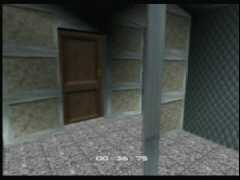
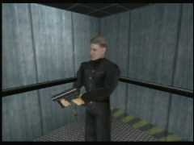
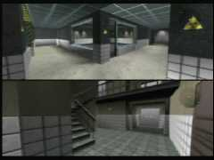

|
.
| Goldeneye
: Passe-Muraille |
81031A1A 0000
.
|
| Goldeneye
: Passe-Muraille |
Avec ce Code, on passe à
travers les Ennemis, les Objets et Meubles, les Portes, mais pas les
Murs. C'est déjà pas mal, et on arrive à facilement
explorer un niveau sans se fatiguer. Vous verrez une Chambre inédite
dans le Train, et pourrez même passer à travers le Rideau
de Fer à la Fin ! On peut entrer avec Trevelyan dans l'Ascenseur
à la fin de Control. Evidemment, si vous faites un Battle, vous
aurez accès à TOUT Facility, Archives ou Caverns.
|
 |
 |
 |
 |